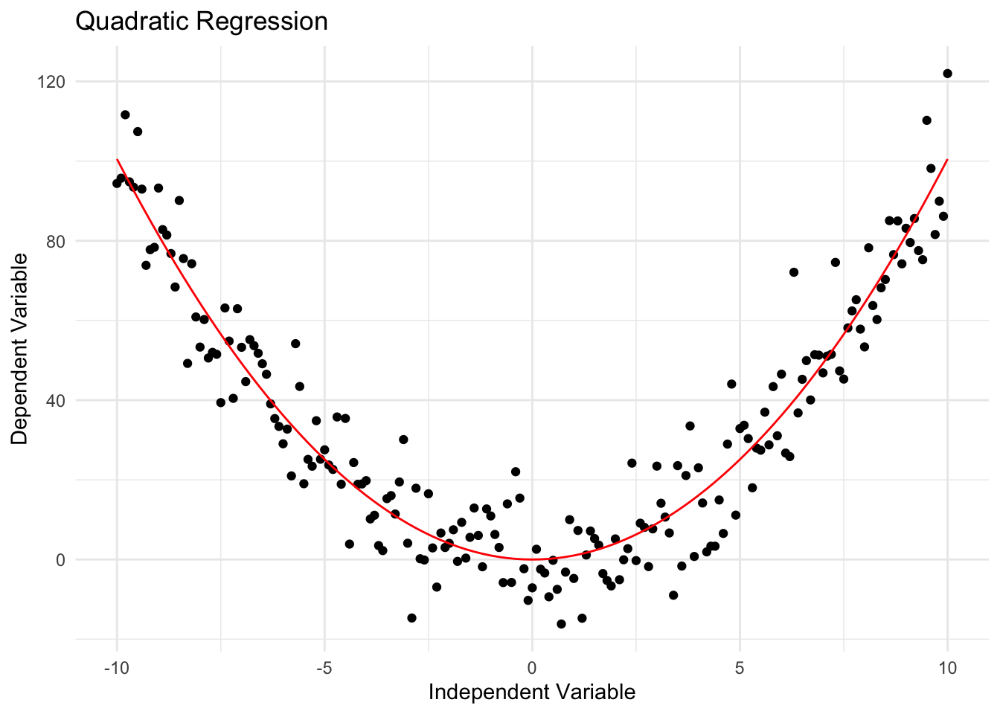
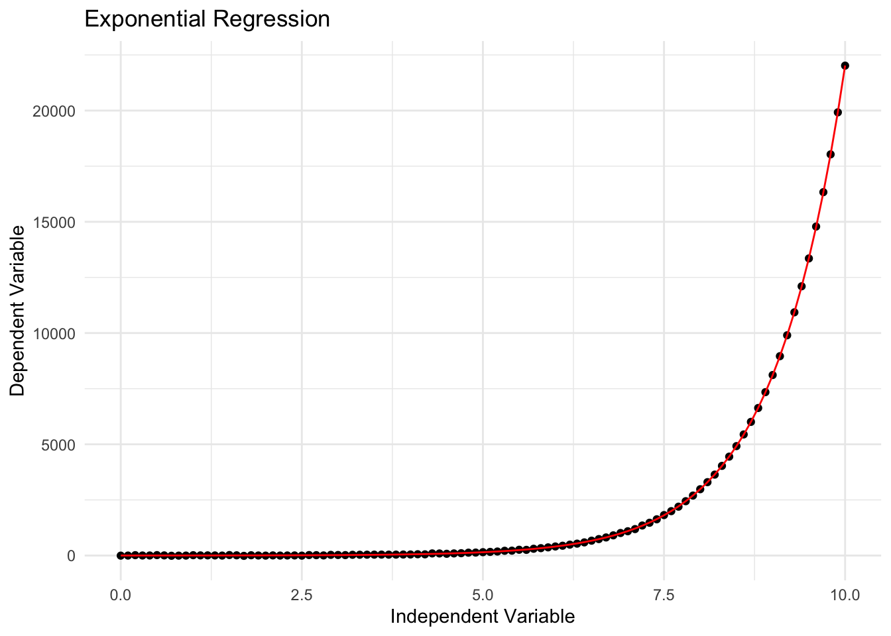
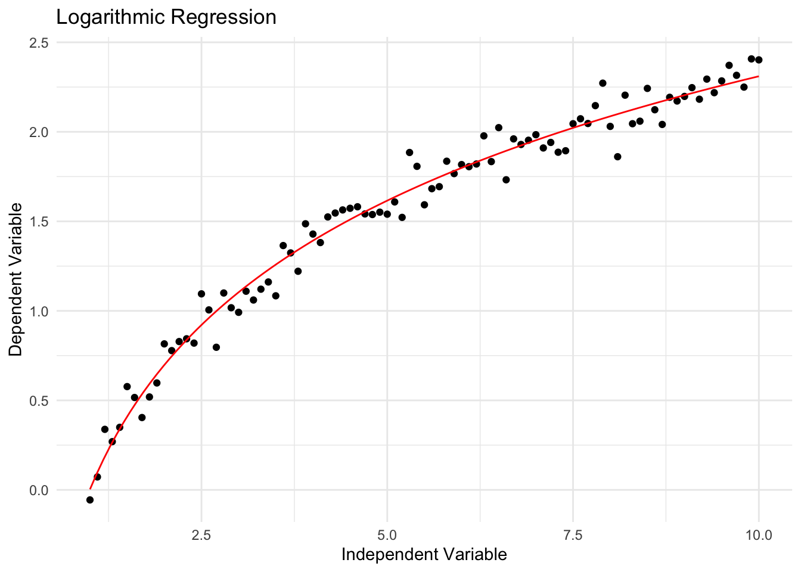
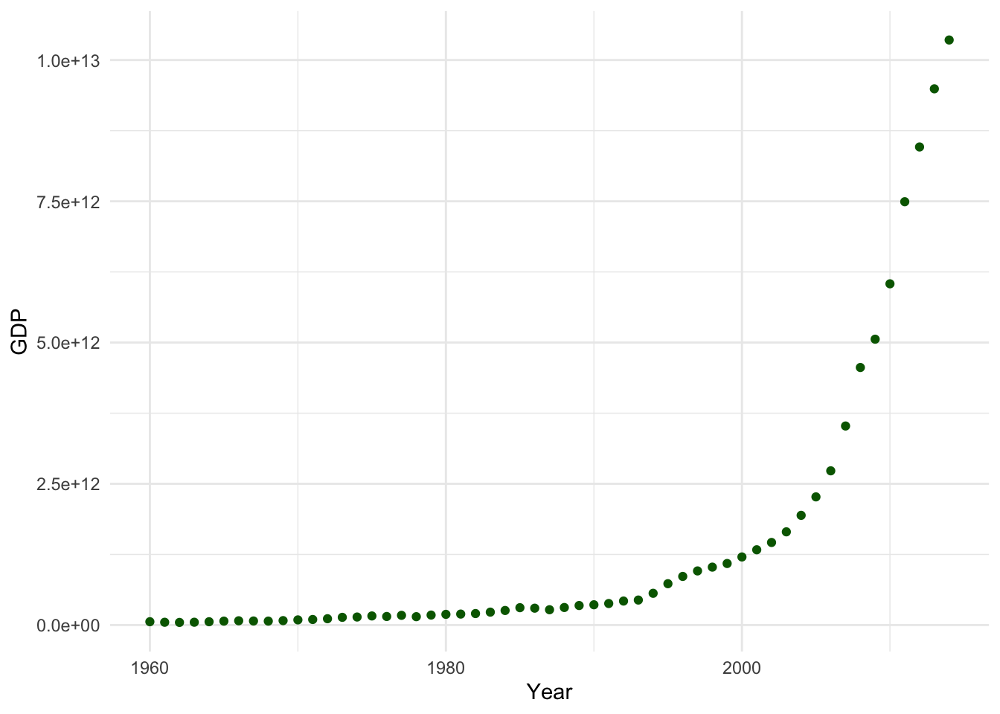
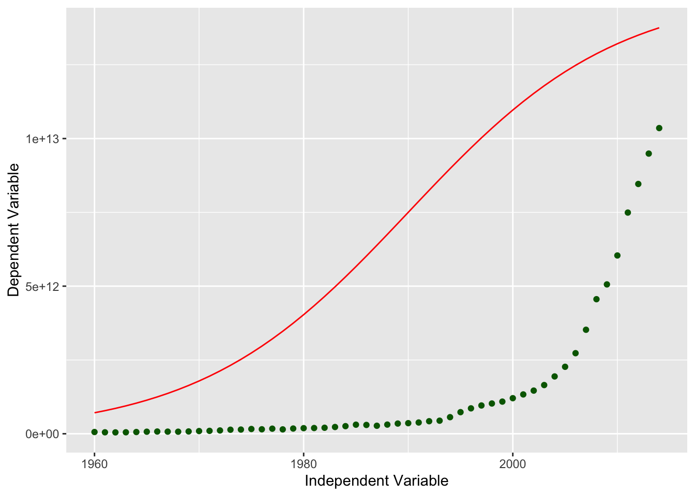
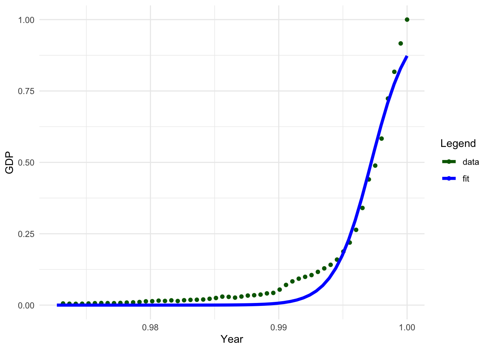

Non-linear regression is a form of polynomial regression that models a non-linear relationship between dependent and independent variables. It's used when data shows a curvy trend, and linear regression wouldn't yield accurate results due to its assumption of linearity.
This method can accommodate various types of regression, such as quadratic, cubic, and so on, to fit the dataset.
Unlike simple linear regression, which uses a straight line to relate two variables (X and Y), non-linear regression captures more complex, curved relationships between these variables.
The main goal of non-linear regression is to minimize the sum of squared differences between the observed Y values and the predictions made by the non-linear model. This sum of squares serves as a measure of how well the model fits the data points. It's calculated by finding the differences between the fitted non-linear function and each data point's Y value, squaring these differences, and then summing them up. A smaller sum of squared differences indicates a better fit of the model to the data.
Non-linear regression employs various mathematical functions such as logarithmic, trigonometric, exponential, power functions, Lorenz curves, Gaussian functions, and other fitting techniques to capture the underlying relationships in the data. This makes it a versatile tool for modeling complex relationships in data.
Figure: Non linear regression (Fig credit: Wikipedia)
Working mechanism:
Non-linear regression models the relationship between a dependent variable and one or more independent variables using a non-linear function. This function is typically a polynomial, exponential, logarithmic, or other non-linear function.
The goal of non-linear regression is to find the parameters that minimize the difference between the predicted and actual output values. This is often done using iterative optimization algorithms, such as gradient descent or Newton's method.
Lets understand it by example from each:
Polynomial Regression (Quadratic relationship)
library(ggplot2)# Generate some sample dataset.seed(123)x <-seq(-10, 10, by =0.1)y <- x^2+rnorm(length(x), sd =10)# Fit a non-linear regression modelmodel <-nls(y ~ a * x^2, start =list(a =1))# Print the model summaryprint(summary(model))
Formula: y ~ a * x^2
Parameters:
Estimate Std. Error t value Pr(>|t|)
a 1.00517 0.01489 67.52 <2e-16 ***
---
Signif. codes: 0 '***' 0.001 '**' 0.01 '*' 0.05 '.' 0.1 ' ' 1
Residual standard error: 9.533 on 200 degrees of freedom
Number of iterations to convergence: 1
Achieved convergence tolerance: 9.898e-10
# Plot the data and the fitted modelggplot(data.frame(x = x, y = y), aes(x = x, y = y)) +geom_point() +stat_function(fun =function(x) coef(model) * x^2, color ="red") +labs(x ="Independent Variable", y ="Dependent Variable", title ="Quadratic Regression") +theme_minimal()

Exponential Regression
# Generate some sample dataset.seed(123)x <-seq(0, 10, by =0.1)y <-exp(x) +rnorm(length(x), sd =10)# Fit a non-linear regression modelmodel <-nls(y ~ a *exp(b * x), start =list(a =1, b =1))# Print the model summaryprint(summary(model))
Formula: y ~ a * exp(b * x)
Parameters:
Estimate Std. Error t value Pr(>|t|)
a 1.0042532 0.0033758 297.5 <2e-16 ***
b 0.9995746 0.0003516 2843.1 <2e-16 ***
---
Signif. codes: 0 '***' 0.001 '**' 0.01 '*' 0.05 '.' 0.1 ' ' 1
Residual standard error: 9.085 on 99 degrees of freedom
Number of iterations to convergence: 2
Achieved convergence tolerance: 4.948e-08
# Plot the data and the fitted modelggplot(data.frame(x = x, y = y), aes(x = x, y = y)) +geom_point() +stat_function(fun =function(x) coef(model)[1] *exp(coef(model)[2] * x), color ="red") +labs(x ="Independent Variable", y ="Dependent Variable", title ="Exponential Regression") +theme_minimal()

Logarithmic Regression
# Generate some sample dataset.seed(123)x <-seq(1, 10, by =0.1)y <-log(x) +rnorm(length(x), sd =0.1)# Fit a non-linear regression modelmodel <-nls(y ~ a *log(b * x), start =list(a =1, b =1))# Print the model summaryprint(summary(model))
Formula: y ~ a * log(b * x)
Parameters:
Estimate Std. Error t value Pr(>|t|)
a 1.00204 0.01572 63.73 <2e-16 ***
b 1.00306 0.02625 38.21 <2e-16 ***
---
Signif. codes: 0 '***' 0.001 '**' 0.01 '*' 0.05 '.' 0.1 ' ' 1
Residual standard error: 0.08978 on 89 degrees of freedom
Number of iterations to convergence: 2
Achieved convergence tolerance: 4.398e-09
# Plot the data and the fitted modelggplot(data.frame(x = x, y = y), aes(x = x, y = y)) +geom_point() +stat_function(fun =function(x) coef(model)[1] *log(coef(model)[2] * x), color ="red") +labs(x ="Independent Variable", y ="Dependent Variable", title ="Logarithmic Regression") +theme_minimal()

Lets understand Non- linear regression model by using real data:
Non-linear regression is used when the relationship between the independent and dependent variables is not linear, or when the data is not normally distributed, or involves complex relationships. Non-linear regression can capture complex patterns and interactions and provide impressive results in performance, stability, and precision.
Data:
You can access the data from here. This is the data about the china’s GDP per year which is growing in an exponential rate.
# Load the packagelibrary(minpack.lm)df <-read.csv("/Users/test/Desktop/Machine_learning/mlblog/kamalchhetrii.github.io/china_gdp.csv")
head(df)
Year Value
1 1960 59184116489
2 1961 49557050183
3 1962 46685178504
4 1963 50097303271
5 1964 59062254890
6 1965 69709153115
Explanatory visualization:
# Define the datax_data <- df[["Year"]]y_data <- df[["Value"]]# Create the plotggplot(df, aes(x = x_data, y = y_data)) +geom_point(color ="darkgreen") +labs(x ="Year", y ="GDP") +theme_minimal()

Building the model:
The logistic function appears to be a reasonable approximation based on the plot’s first appearance. This is because the logistic function begins slowly, grows more rapidly in the middle, and then declines once more in the conclusion.
# Define the sigmoid functionsigmoid <-function(x, Beta_1, Beta_2) { y <-1/ (1+exp(-Beta_1*(x-Beta_2)))return(y)}# Define the parametersbeta_1 <-0.10beta_2 <-1990.0# Apply the logistic functionY_pred <-sigmoid(x_data, beta_1, beta_2)# Load necessary librarylibrary(ggplot2)# Create a dataframe for plottingdf <-data.frame(x = x_data, y = Y_pred *15000000000000., y_actual = y_data)# Plot the initial prediction against the data pointsggplot(df, aes(x = x)) +geom_line(aes(y = y), color ="red") +geom_point(aes(y = y_actual), color ="darkgreen") +labs(x ="Independent Variable", y ="Dependent Variable")

Now, we can see the sigmoid and the our actual data plotted in here. We have find the best parameter for our data. We can fit our sigmoid function to the data using curve_fit, which applies non-linear least squares. It is necessary to normalize our x and y variable before proceeding to further data analysis.
# Normalize the dataxdata <- x_data /max(x_data)ydata <- y_data /max(y_data)
# Define the sigmoid functionsigmoid <-function(x, Beta_1, Beta_2) { y <-1/ (1+exp(-Beta_1*(x-Beta_2)))return(y)}# Initial parameter valuesstart <-c(Beta_1 =1, Beta_2 =1)# Non-linear least squares fitfit <-nlsLM(ydata ~sigmoid(xdata, Beta_1, Beta_2), start = start)# Print the final parametersprint(coef(fit))
Beta_1 Beta_2
690.4517142 0.9972071
Lets visualize the result obtained from model:
# Define the x valuesx <-seq(from =1960, to =2015, length.out =55)x <- x /max(x)# Calculate the y valuesy <-sigmoid(x, coef(fit)[1], coef(fit)[2])# Create a dataframe for plottingdf <-data.frame(x =c(xdata, x), y =c(ydata, y), group =rep(c("data", "fit"), each =55))# Load necessary librarylibrary(ggplot2)# Create the plotggplot(df, aes(x = x, y = y, color = group)) +geom_point(data = df[df$group =="data", ]) +geom_line(data = df[df$group =="fit", ], size =1.5) +scale_color_manual(values =c("darkgreen", "blue")) +labs(x ="Year", y ="GDP", color ="Legend") +theme_minimal()
Warning: Using `size` aesthetic for lines was deprecated in ggplot2 3.4.0.
ℹ Please use `linewidth` instead.

# Define the sigmoid functionsigmoid <-function(x, Beta_1, Beta_2) { y <-1/ (1+exp(-Beta_1*(x-Beta_2)))return(y)}# Split data into train/testset.seed(0) # for reproducibilitymsk <-runif(nrow(df)) <0.8train_x <- xdata[msk]test_x <- xdata[!msk]train_y <- ydata[msk]test_y <- ydata[!msk]# Initial parameter valuesstart <-c(Beta_1 =1, Beta_2 =1)# Build the model using train setfit <-nlsLM(train_y ~sigmoid(train_x, Beta_1, Beta_2), start = start)# Print the final parametersprint(coef(fit))
Beta_1 Beta_2
698.7956319 0.9972452
# Predict using test sety_hat <-predict(fit, list(x = test_x))print(y_hat)